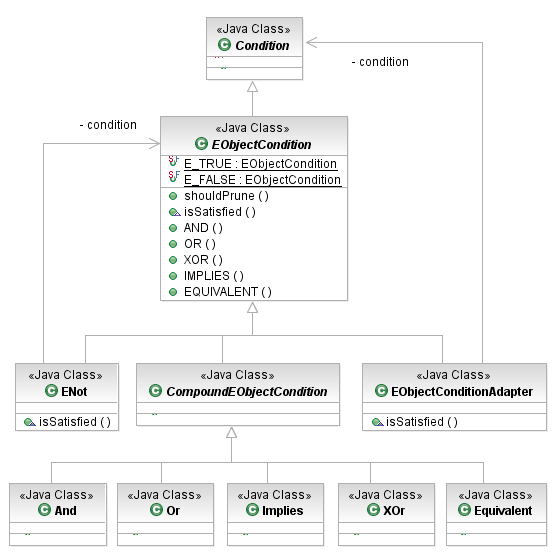
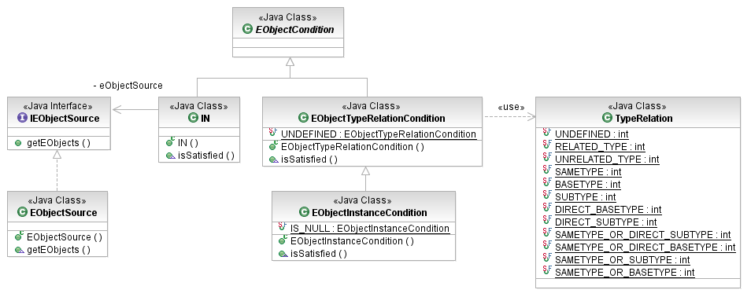

In addition to primitive value conditions that test Java's (and EMF's) primitive data types, the EMF Model Query Framework provides a condition API geared specifically to working with model elements, that is EObjects in EMF resources. These are the primary building blocks of executable queries, as it is with EObjectConditions that a query's WHERE clause filters the result set.
The root of the EObject condition hierarchy is the abstract EObjectCondition class. It is common for implementers of query conditions to extend this class to define their custom predicates using regular Java code. However, it is rarely the case that this is actually necessary, as the framework provides a wide variety of condition classes that cover all of the most commonly used of EMF's reflective EObject API.

[as SVG]
Like its superclass, the EObjectCondition provides static factory methods for boolean operations, to combine EObject conditions into complex expressions. In addition, the EObjectConditionAdapter class encapsulates any non-EObject Condition to embed it in an EObject-based expression.
The EMF Query Framework provides a few simple instance-oriented conditions on EObjects. These included tests for membership in a collection, object identity, and object classification.

[as SVG]
The IN condition tests whether an EObject is in some collection. The client provides this collection either literally, as a single EObject or a set of EObjects, or as an abstract IEObjectSource. This latter case is particularly interesting, because EMF queries are, themselves, object sources conforming to this interface. This is one way in which queries can be nested.
EObject subject = getEObject(); // some hypothetical source of an EObject
Set<Book> books = new HashSet<Book>();
books.add(getBook("Bleak House"));
books.add(getBook("The Pickwick Papers"));
books.add(getBook("Nicholas Nickleby"));
EObjectCondition cond = new IN(books);
System.out.println("Test: " + cond.isSatisfied(subject));
The EObjectTypeRelationCondition class tests the EClass of an EObject. The TypeRelation enumerates all of the possible ways that the EClass of an object can relate to the constraining EClass.
Set<EObject> subjects = getEObject()s; // some hypothetical source of EObjects
EObjectCondition cond = new EObjectTypeRelationCondition(
EXTLibraryPackage.Literals.AUDIO_VISUAL_ITEM,
TypeRelation.SAMETYPE_OR_SUBTYPE_LITERAL);
// which of the objects are audio-visual items of some kind?
for (EObject subject : subjects) {
if (cond.isSatisfied(subject)) {
System.out.println(subject);
}
}
The EObjectInstanceCondition is a special case of the type condition that checks whether an input element is identical to a given element.
Copyright (c) 2000, 2007 IBM Corporation and others. All Rights Reserved.